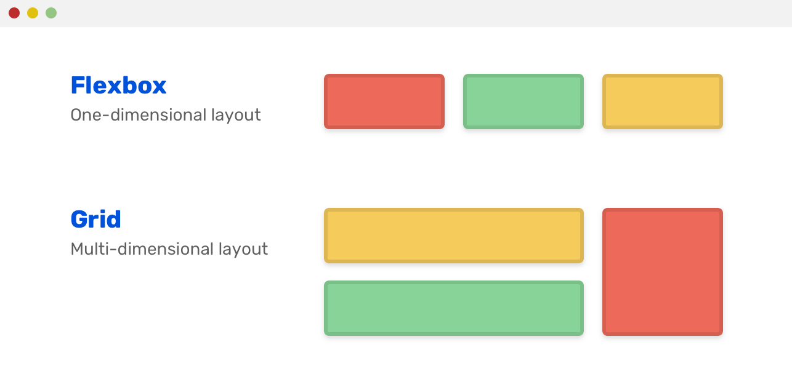

Flex Box VS CSS Grid
En este sitio vamos a abordar los contenidos de Flex Box y CSS Grid
empezando por las diferencias que hay entre los mismos teniendo como
referencia el artículo de Taviles Fanny (2018)
en el que se nos explica de una manera muy detallada y clara los
diferentes usos y aplicaciones que tiene cada uno de estos valores de
html 5.

Después de entender las diferencias entre cada uno de estos valores
se hará un énfasis por separado en los mismos, por medio de los artíciulos
de MDN Web Docs donde se nos explica lo que es el Flex Box (MDN Web Docs 2019)
y el CSS Grid (MDN Web Docs 2020).
Referencias:
Open Webinars (2019) ¿Qué es Flex Box? (2021) https://www.youtube.com/watch?v=nlkBp4fbVbg
Open Webinars (2019) ¿Qué es CSS Grid (2021) https://www.youtube.com/watch?v=3VqnQMSEFCc
Materiales Front End D (2019) Ejercicio 1: Flex y Flex Direction (2021) https://books.adalab.es/materiales-front-end-d/sprint-1.-hola-mundo/1_4_posicionamiento_con_flexbox#ejercicio-1-flex-y-flex-direction
Digital Guide IONOS (2020) CSS Grid Tutorial con ejemplos (2021) https://www.ionos.es/digitalguide/paginas-web/creacion-de-paginas-web/css-grid-layout/
Taviles. F. (2018) Flex Box VS CSS Grid ¿Cúal es la diferencia? (2021) https://platzi.com/blog/flexbox-vs-css-grid-cual-es-la-diferencia/
MDN Web Docs (2019) Usando las cajas flexibles CSS (2021) https://developer.mozilla.org/es/docs/conflicting/Web/CSS/CSS_Flexible_Box_Layout/Basic_Concepts_of_Flexbox
MDN Web Docs (2020) CSS Grid Layout (2021) https://developer.mozilla.org/es/docs/Web/CSS/CSS_Grid_Layout